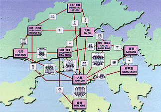
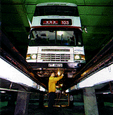
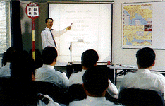
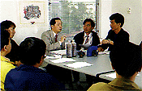
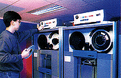
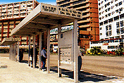
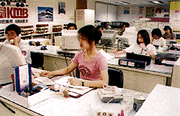
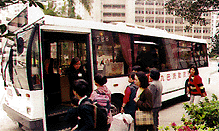

KMB, Keeping Hong Kong on the Move
An efficient transport system is crucial to the success of a fast
moving city such as Hong Kong. Every day in Hong Kong, the total
ridership of various public transport modes amounts to 10 million
passenger trips, out of which 2.8 million are making use of KMB's
services.
Since 1933, the Kowloon Motor Bus has been serving Hong Kong for over
60 years and it proves to be the key factor behind the city's mobility.
It now owns a bus fleet of over 3,300 running on more than 380 routes.
This places KMB among the largest private bus companies in the world.
Efficiently taking millions of passengers every day to their
destinations is no easy task. We rely on a number of elements :
- an extensive network;
- a modernized fleet;
- a conscientious staff force;
- good supporting services; and
- a genuine care for customers.
An Extensive Network

Our network spans all over the Kowloon Peninsular and the New
Territories, and through the harbour tunnels, extends to the Hong Kong
Island. No other public transport system in Hong Kong runs a network of
similar scale.
Scheduling and despatching the bus fleet to meet the daily needs of
commuters is the job of the KMB Traffic Department. The department
consists of about 6,500 bus captains working on the front-line and a
supporting team of operation officers, inspectors, regulators and
platform staff who are accountable for daily operations.
To catch up with the quick-paced development of the territory, a public
service industry must be able to plan ahead for the changing needs of
the community. Our Marketing, Planning & Development Department
closely monitors population trends and market needs in order to enhance
and develop the bus network, as well as to draw up the company's Five
Year Plan for long term development.
A Modernized Fleet

Our fleet comprises over 3,300 buses, 20% of which are air-conditioned.
Different models are acquired from various suppliers to ensure that our
buses are comfortable, reliable and technologically advanced.
To run an efficient and safe bus operation, our Service Department
takes on the task of bus maintenance, repairs, refueling and cleaning.
As passenger safety is our top priority, the Service Department examines
each bus regularly and performs the annual inspection as required by the
government. A major overhaul is conducted every four to six years.
To meet these requirements, KMB has installed the highest standard of
machinery and equipment in its 15 modern facilities. The Tuen Mun
Overhaul Centre is the world's largest of its type and has been listed
in the Guinness Book of Records. Other depots, such as the ones located
in Shatin, Kowloon Bay and Lai Chi Kok, concentrate on providing routine
maintenance and repairs. The Tuen Mun Bus Body Construction Depot is
responsible for assembling new buses, and has the capacity for a monthly
output of 35 new buses.
A Conscientious Staff Force

We understand that in the line of service industry, the performance of
our staff determines our service quality. KMB employs over 11,000
staffs, of which 6,500 are bus captains. Since they are the company's
representatives in the forefront, we uphold stringent standards in their
driving skills and working attitudes. Our Bus Captain Training School
provides a comprehensive training programme for all new recruits and
there is a unit to counsel bus captains on safe driving techniques.

We provide on-the-job training to our technical staff and operate in
conjunction with the government's Labour Department apprentice
programmes. As for the engineers, our advanced training programmes equip
them for professional qualifications. Our Human Resources Department
also runs a training centre which tailors training courses for different
levels of staff, aiming at upgrading their performance standards.
To ensure that all staff members work happily for the company, KMB
is concerned with employee welfare. We have our own medical centre and
offer a non-contributory retirement scheme. We also subsidize staff
canteens and recreational activities, reimburse staff for extra-mural
studies, and provide free travel on KMB buses.
Good Supporting Services
Apart from a modernized fleet and a conscientious staff force, KMB is
also proud of its self-contained, all-rounded supporting services and
sound management system.

Financially related matters are efficiently handled by three
departments. The Treasury Department collects, counts and banks all
money received. The Accounts Department is responsible for financial
records and budgetary control. The Internal Audit Department monitors
the Company's assets, and ensures the adequacy of operation and
financial controls.
To process the huge amount of sophisticated data and information,
our Data Processing Department is equipped with advanced computer
systems. 
For example, the department has stored information on almost
half a million bus spare parts. This allows the Purchasing Department to
keep tabs on stock quantity.
The Internal Services Department on the one hand takes care of in-house
maintenance and on the other builds bus shelters for the comfort of
passengers; whereas the Insurance Department takes care of all insurance
matters and provides consultancy to bus captains on safe driving.
A Genuine Care for Customers

We
have attached much importance to understanding and meeting customer
needs. The Public Relations Department works hard to enhance the
communication channels with the public in order to obtain feedbacks for
service improvement.
The Passenger Enquiry Hotline boasts of a 24-hour service and is
handling a monthly average of 300,000 enquiries.

A Service Centre has been set up in Shatin to provide service
information and collect passenger opinions. Serving similar purposes is
the Mobile Service Centre which is a converted air-conditioned bus
travelling to different locations. We attend public forums and community
meetings to further understand the needs of different communities. Also,
Passenger Liaison Group Meetings are convened to explore ways for
service improvement.
Being a responsible corporate citizen, KMB is active in participating in
community events such as the Walk-for Millions and road safety
programmes.
The 90's is an era of challenge. With the continuous growth of Hong
Kong's population and economic activities, there are forever higher
demands for public transportation. The bus is no longer a simple means
of taking people to their destinations, it has to be convenient, fast,
and at the same time, provide a safe and comfortable experience to
its riders. KMB has placed great emphasis on providing top quality
service. In the pursuit of excellence, we remain a pace setter,
always improving and upgrading our services to meet the commuting needs
of the community.
KMB, Keeping Hong Kong on the Move!